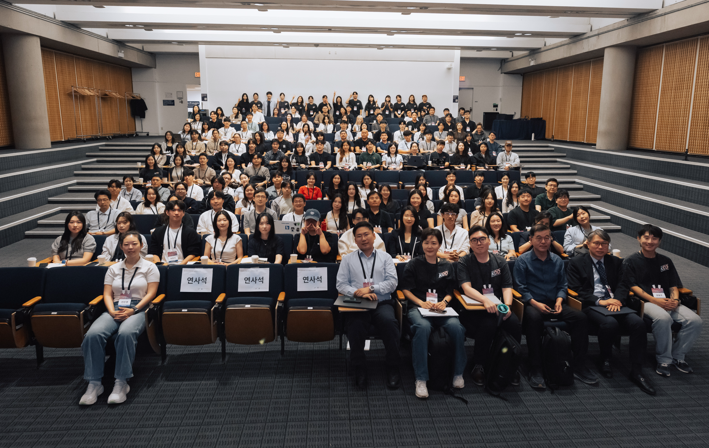
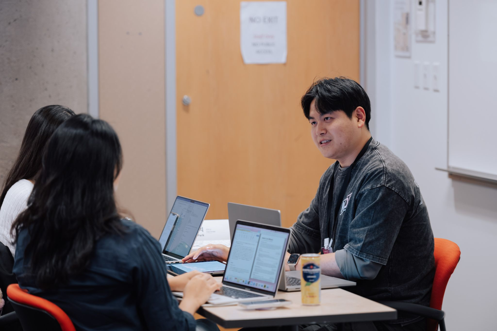
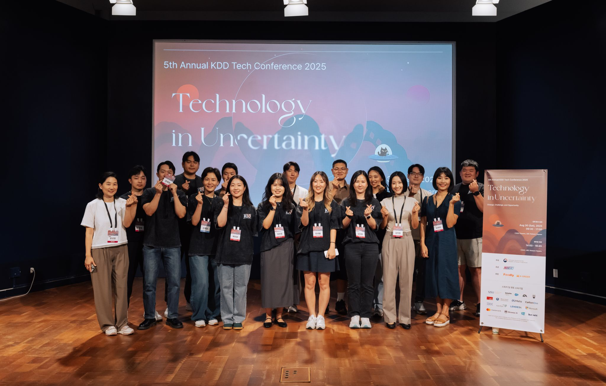

MTVancouver KDD · 1:2 career mentoring · Vancouver · Aug 2025
Mentoring at the 5th KDD Korean Tech Conference: Technology in Uncertainty
I joined the fifth annual KDD Korean Tech Conference as a career mentor, meeting participants in a 1:2 format to talk about technology careers in Canada. The event brought 211 people together around one practical question: how do we keep moving when the industry itself feels uncertain?

Uncertainty was not background noise. It was the topic.
By 2025, change in technology careers was no longer an abstract discussion. AI was reshaping how people worked, hiring felt harder to read, and many people were trying to decide which skills and experiences would still matter.
Vancouver KDD brought those questions into one full-day conference. Speaker sessions offered different perspectives on change, while the mentoring program gave participants a smaller place to connect those ideas to their own careers. The official event recap recorded 211 participants.
| Theme | Technology in Uncertainty: Change, Challenge, and Opportunity |
| Date and place | August 30, 2025 · UBC Robson Square, Vancouver |
| Scale | 211 participants |
| Mentoring format | 1:2 career conversations alongside talks and community sessions |
| My role | Career mentor |
Small conversations inside a 211-person conference
I participated as a career mentor, bringing the perspective of a product designer who has also worked across product management, project leadership, and design teams in Korea and Canada.
The value of the 1:2 format was simple: it made room for context. A large talk can surface a useful idea, but a career decision depends on where someone is starting, what experience they already have, and what they can realistically do next.
My role was not to hand over one universal roadmap. It was to listen for the decision underneath the job title and help make the next move more concrete.

Start with the person, not a job title
A job title can hide the actual question. Someone may be asking whether their previous experience still counts, how to enter a new market, or whether the skills they are building lead toward the work they actually want.
The most useful conversations moved through three layers:
| Layer | What we tried to clarify |
|---|---|
| Current context | The experience, constraints, and strengths the person already had |
| Direction | The kind of problem, team, and responsibility they wanted next |
| Next evidence | One realistic way to test that direction through a project, conversation, or application |
This did not remove uncertainty. It made the uncertainty specific enough to work with.
A large conference still made room for individual direction
The day included talks, career sessions, networking, and 1:2 mentoring. That combination mattered. Participants could hear how experienced people were reading the industry, then step into a smaller conversation about what those changes meant for them.
The official event recap highlighted both the speaker sessions and the career insight created through mentoring. For me, that was the strength of the format: the conference offered range, while the mentoring made the day personal.

What stayed with me as a mentor
I joined the event to share what I had learned, but stepping outside everyday work also gave me a wider view of technology and career. Conversations with people who were still exploring their path made familiar questions feel specific again.
Good mentoring does not remove uncertainty. It helps someone make the next decision with more context.
A mentor cannot choose someone else's career. What we can do is listen carefully, make the trade-offs visible, and help turn a broad concern into a decision that can be tested.
That is what stayed with me from KDD: a large community event can create momentum, but one focused conversation can help someone decide where to place it.